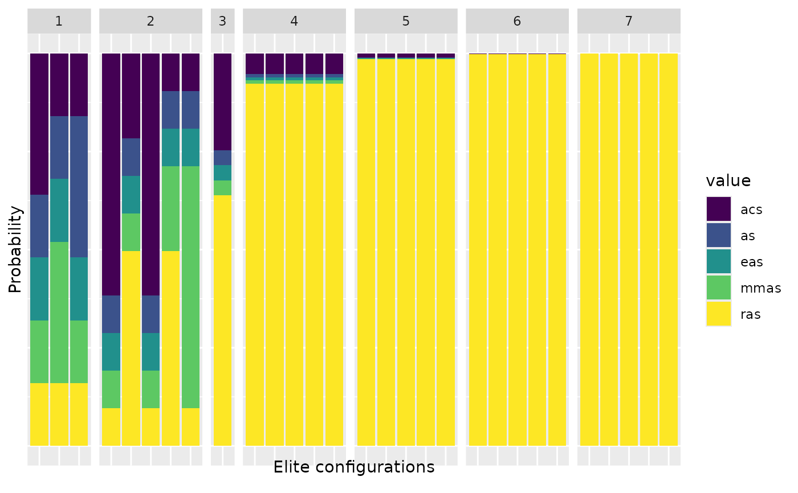
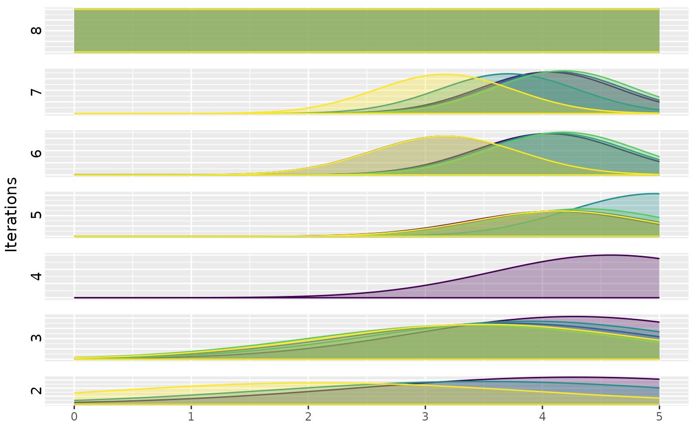

The `plot_model` function creates a plot that displays the sampling models from which irace generated parameter values for new configurations during the configurations process.
For categorical parameters a stacked bar plot is created. This plot shows the sampling probabilities of the parameter values for the elite configurations in the iterations of the configuration process.
For numerical parameters a sampling distributions plot of the numerical parameters for the elite configurations of an iteration. This plot shows de density function of the truncated normal distributions associated to each parameter for each elite configuration on each iteration.
plot_model(irace_results, param_name, filename = NULL)The data generated when loading the Rdata file created by irace
String, parameter to be included in the plot (example: param_name = "algorithm"))
(character(1)) File name to save the plot, for example "~/patch/example/filename.png".
sampling model plot
plot_model(iraceResults, param_name="algorithm")

plot_model(iraceResults, param_name="alpha")

#> TableGrob (8 x 2) "arrange": 9 grobs
#> z cells name grob
#> 1 1 (1-1,2-2) arrange gtable[layout]
#> 2 2 (2-2,2-2) arrange gtable[layout]
#> 3 3 (3-3,2-2) arrange gtable[layout]
#> 4 4 (4-4,2-2) arrange gtable[layout]
#> 5 5 (5-5,2-2) arrange gtable[layout]
#> 6 6 (6-6,2-2) arrange gtable[layout]
#> 7 7 (7-7,2-2) arrange gtable[layout]
#> 8 8 (8-8,2-2) arrange gtable[layout]
#> 9 9 (1-8,1-1) arrange text[GRID.text.4392]